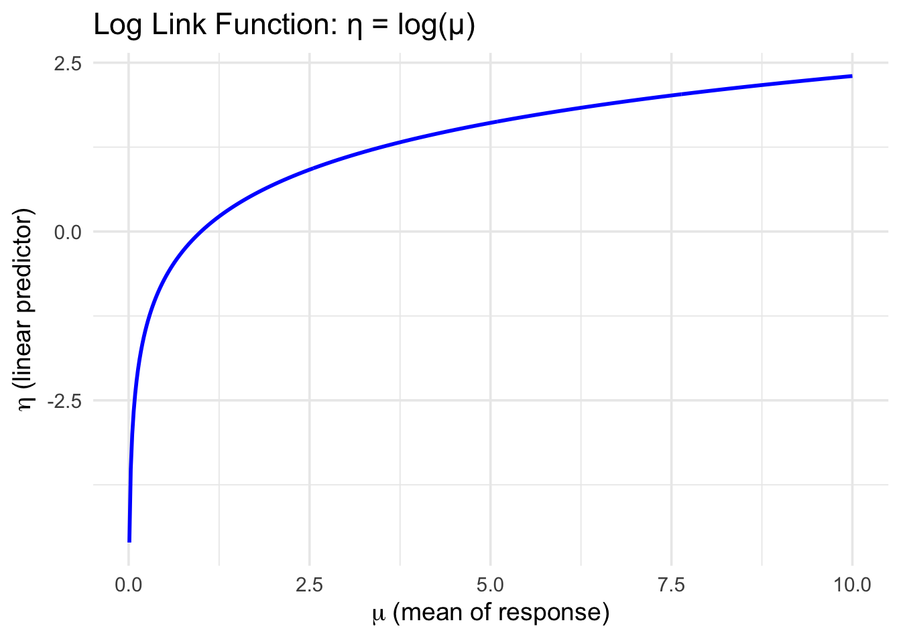
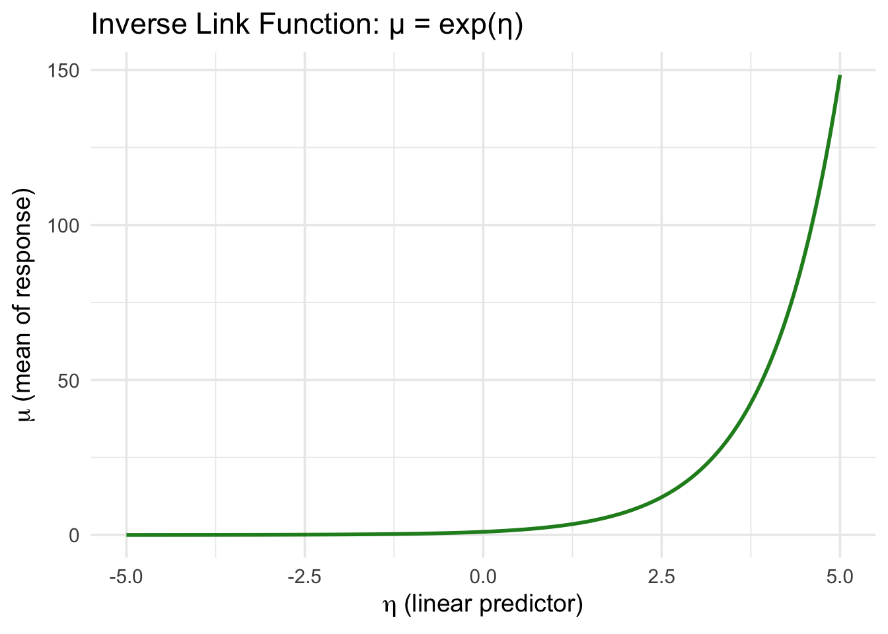

Code
# Load required libraries
library(ggplot2)
library(patchwork) # For side-by-side plots
# Create data for mu (positive values only)
mu <- seq(0.01, 10, length.out = 500)
eta_from_mu <- log(mu)
df1 <- data.frame(mu = mu, eta = eta_from_mu)
# Create data for eta (real number line)
eta <- seq(-5, 5, length.out = 500)
mu_from_eta <- exp(eta)
df2 <- data.frame(eta = eta, mu = mu_from_eta)
# Plot 1: Link function (log)
p1 <- ggplot(df1, aes(x = mu, y = eta)) +
geom_line(color = "blue", size = 1) +
labs(
title = "Log Link Function: η = log(μ)",
x = expression(mu ~ "(mean of response)"),
y = expression(eta ~ "(linear predictor)")
) +
theme_minimal(base_size = 14)Warning: Using `size` aesthetic for lines was deprecated in ggplot2 3.4.0.
ℹ Please use `linewidth` instead.Code
# Plot 2: Inverse link function (exp)
p2 <- ggplot(df2, aes(x = eta, y = mu)) +
geom_line(color = "forestgreen", size = 1) +
labs(
title = "Inverse Link Function: μ = exp(η)",
x = expression(eta ~ "(linear predictor)"),
y = expression(mu ~ "(mean of response)")
) +
theme_minimal(base_size = 14)
# Combine the plots side by side
p1 
Code
p2